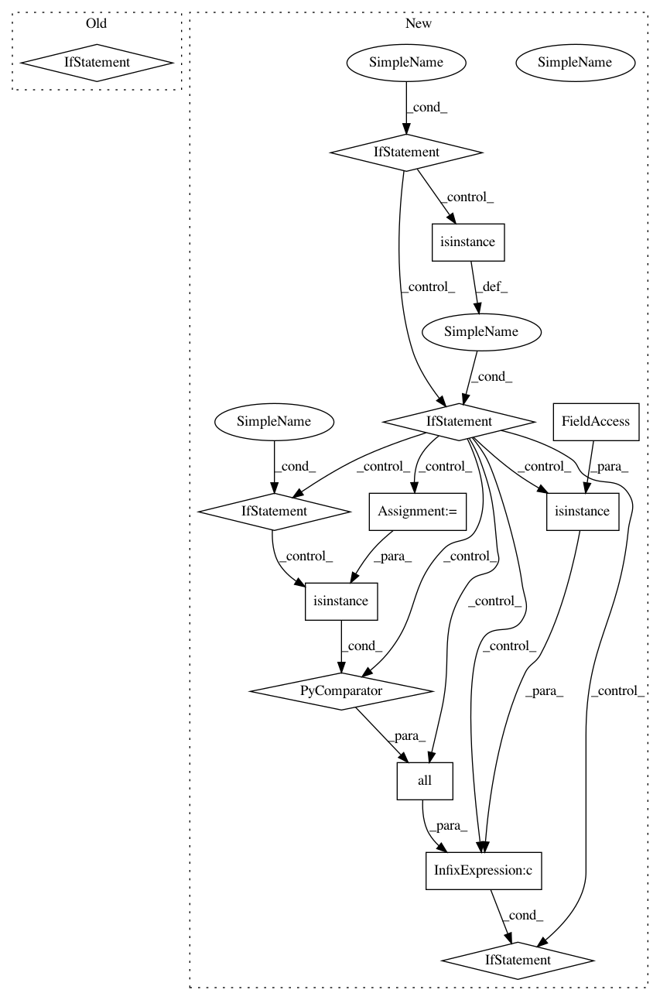

ca14cf72e3e4bd3a6136cafad8701ac41f48f09b,yellowbrick/cluster/elbow.py,KElbowVisualizer,__init__,#KElbowVisualizer#,206
Before Change
self.timings = timings
// Convert K into a tuple argument if an integer
if isinstance(k, int):
k = (2, k+1)
// Expand k in to the values we will use, capturing exceptions
try:
k = tuple(k)
self.k_values_ = list(range(*k))
except:
After Change
self.timings = timings
// Convert K into a tuple argument if an integer
if isinstance(k, int):
self.k_values_ = list(range(2, k+1))
elif isinstance(k, tuple) and len(k) == 2 and \
all(isinstance(x, (int, np.integer)) for x in k):
self.k_values_ = list(range(*k))
elif isinstance(k, collections.Iterable) and \
all(isinstance(x, (int, np.integer)) for x in k):
self.k_values_ = list(k)
else:
raise YellowbrickValueError((
"Specify an iterable of integers, a range, or maximal K value,"
" the value "{}" is not a valid argument for K.".format(k)
))
// Holds the values of the silhoutte scores
self.k_scores_ = None
def fit(self, X, y=None, **kwargs):
In pattern: SUPERPATTERN
Frequency: 3
Non-data size: 13
Instances
Project Name: DistrictDataLabs/yellowbrick
Commit Name: ca14cf72e3e4bd3a6136cafad8701ac41f48f09b
Time: 2018-08-25
Author: davidwaterman@gmail.com
File Name: yellowbrick/cluster/elbow.py
Class Name: KElbowVisualizer
Method Name: __init__
Project Name: scikit-optimize/scikit-optimize
Commit Name: 2f381632862d04f55a0cb8c396804f93c9d0cad5
Time: 2016-08-08
Author: manojkumarsivaraj334@gmail.com
File Name: skopt/tree_opt.py
Class Name:
Method Name: _tree_minimize
Project Name: scikit-optimize/scikit-optimize
Commit Name: 2f381632862d04f55a0cb8c396804f93c9d0cad5
Time: 2016-08-08
Author: manojkumarsivaraj334@gmail.com
File Name: skopt/gp_opt.py
Class Name:
Method Name: gp_minimize